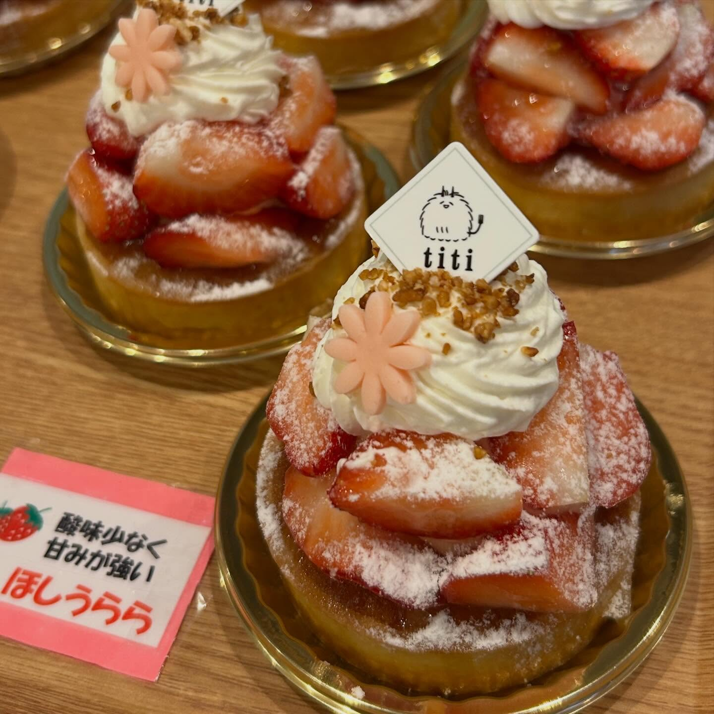
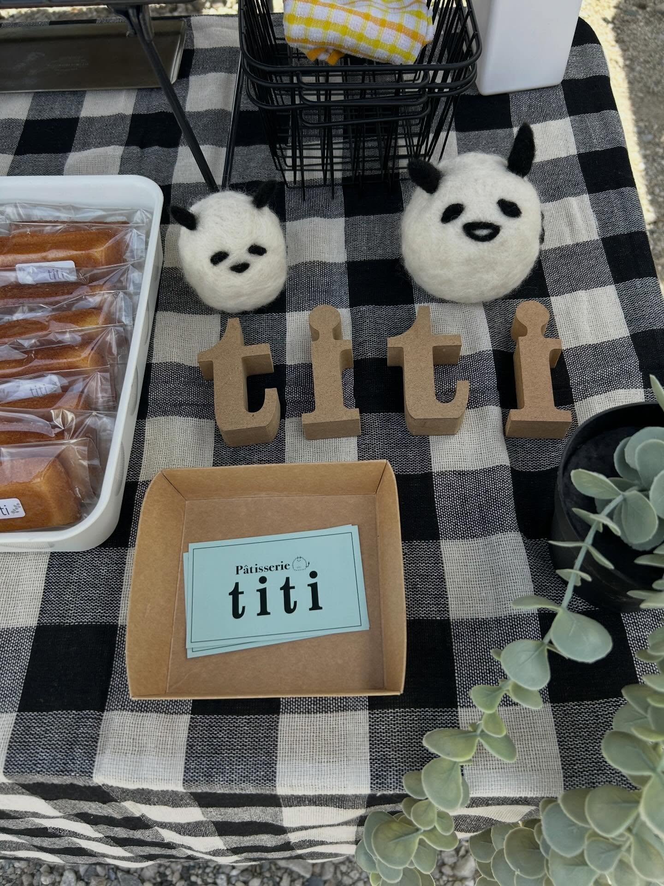

いちご〈ほしうらら〉
「酸味少なく甘みが強い」——いちごの品種札を添えて、ショーケースに。
PATISSERIE TITI — NAKAHARA, KAWAGOE
ショートケーキと、季節のケーキ。
川越市駅から歩いて2分、中原町のパティスリー。
10:30〜19:00｜水曜定休｜川越市駅 徒歩2分
ABOUT
川越市駅から歩いて2分、中原町のパティスリー。2021年9月にオープンし、ショーケースには生ケーキと焼き菓子が並びます。
店内には6席のカフェスペースも（ご予約いただけます）。ショーケースのケーキを、その場で一皿ずつ。駐車場は3台あります。

口溶けのいいスポンジと、生クリーム。
SHOP INFO
| 店名 | パティスリー ティティ（Patisserie titi） |
|---|---|
| 住所 | 埼玉県川越市中原町2-11-17 川越市駅前ビル1F |
| アクセス | 東武東上線 川越市駅から徒歩2分 |
| 営業時間 | 10:30〜19:00 |
| 定休日 | 水曜 ※最新の営業日はInstagramでご確認ください |
| 電話 | 049-298-3680 |
| 喫茶 | 併設カフェ 6席（ご予約可） |
| 駐車場 | 3台 |